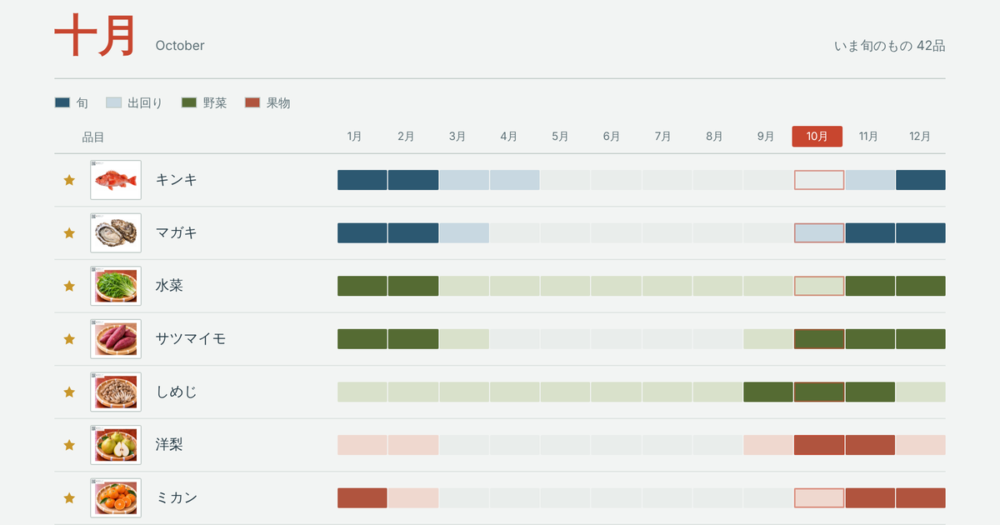

和食材カレンダーとは
日本の魚介・野菜・果物230品目について、いつが旬か、いつ出回るかを月ごとにまとめたカレンダーです。

わかること
- いまの季節に日本で何が美味しいか
- 食材ごとの旬の時期と、市場に出回る期間
- 調理法、選び方、保存方法、主な産地
こんなときに
「日本の魚はいま何が美味しいのか」「11月に日本から何が入るのか」。献立を考えるとき、仕入れを計画するとき、季節の食材を調べたいときにお使いください。月を選べばその月が旬のものだけが並びます。
掲載している食材
魚介100品目、野菜95品目、果物35品目。すべてに写真と、4種類前後の調理法を載せています。品目ごとのページでは、別の呼び名や漢字表記、ローマ字表記も確認できます。
5つの言語で
日本語・英語・タイ語・繁体字中国語・簡体字中国語に対応しています。海外の料理人やバイヤーの方にも、そのままお使いいただけます。
運営・お問い合わせ
和食材カレンダーは KAN が運営しています。ご質問、掲載内容のお気づきの点、取材のご依頼などは までお寄せください。
About Washokuzai Calendar
A calendar of when 230 Japanese ingredients are at their best, and when they are in the market — seafood, vegetables and fruit, month by month.
What you can find out
- What is good in Japan right now, in this season
- When each ingredient is at its best, and how long it is available
- How to cook it, how to choose it, how to store it, and where it comes from
When it helps
What Japanese fish is good at the moment? What will come from Japan in November? Use it when you are planning a menu, planning what to buy, or simply want to know what is in season. Pick a month and you see only what is at its best then.
What is covered
100 kinds of seafood, 95 vegetables and 35 fruits. Every one has a photograph and around four ways of cooking it. Each item page also gives the Japanese name, its other names, and the romanised spelling.
In five languages
Japanese, English, Thai, Traditional Chinese and Simplified Chinese — so it can be handed straight to a chef or a buyer anywhere.
Who runs this, and how to get in touch
Washokuzai Calendar is run by KAN. For questions, corrections or enquiries, please write to .
เกี่ยวกับปฏิทินวัตถุดิบญี่ปุ่น
ปฏิทินที่รวบรวมว่าวัตถุดิบญี่ปุ่น 230 ชนิดอร่อยที่สุดช่วงไหน และมีจำหน่ายช่วงไหน ทั้งอาหารทะเล ผัก และผลไม้ แยกตามเดือน
สิ่งที่ดูได้
- ตอนนี้ที่ญี่ปุ่นมีอะไรอร่อย ในฤดูกาลนี้
- ช่วงที่วัตถุดิบแต่ละชนิดอร่อยที่สุด และช่วงที่มีจำหน่ายในตลาด
- วิธีปรุง วิธีเลือก วิธีเก็บรักษา และแหล่งผลิตหลัก
ใช้ตอนไหน
ปลาญี่ปุ่นตอนนี้อะไรอร่อย เดือนพฤศจิกายนจะมีอะไรมาจากญี่ปุ่น ใช้ได้ทั้งตอนคิดเมนู วางแผนสั่งซื้อ หรืออยากรู้ว่าช่วงนี้มีอะไรเป็นของตามฤดูกาล เลือกเดือนแล้วจะเห็นเฉพาะของที่อร่อยที่สุดในเดือนนั้น
วัตถุดิบที่รวบรวมไว้
อาหารทะเล 100 ชนิด ผัก 95 ชนิด ผลไม้ 35 ชนิด ทุกชนิดมีภาพประกอบและวิธีปรุงราวสี่แบบ ในหน้าของแต่ละชนิดยังดูชื่อภาษาญี่ปุ่น ชื่ออื่น และคำอ่านแบบโรมันได้ด้วย
ห้าภาษา
ญี่ปุ่น อังกฤษ ไทย จีนตัวเต็ม และจีนตัวย่อ ส่งต่อให้เชฟหรือผู้ซื้อที่ไหนก็ใช้ได้ทันที
ผู้ดูแลและการติดต่อ
ปฏิทินวัตถุดิบญี่ปุ่นดูแลโดย KAN หากมีคำถาม ข้อแก้ไข หรือเรื่องอื่นใด กรุณาติดต่อ
關於和食材月曆
這是一份整理了日本230項食材何時當令、何時有供應的月曆，涵蓋海鮮、蔬菜與水果，依月份排列。
可以查到什麼
- 這個季節的日本，現在什麼最美味
- 每項食材的當令時期，以及市場上的供應期間
- 料理方式、挑選方式、保存方式與主要產地
什麼時候用得上
現在日本的魚什麼最好吃？十一月從日本會進什麼？設計菜單、安排採購，或只是想知道當季有什麼，都可以使用。選擇月份後，只會顯示該月當令的食材。
收錄的食材
海鮮100項、蔬菜95項、水果35項。每一項都附照片與約四種料理方式。各食材的頁面還可以查到日文名稱、別名與羅馬拼音。
五種語言
日文、英文、泰文、繁體中文與簡體中文，可以直接交給任何地方的廚師或採購使用。
營運與聯絡
和食材月曆由 KAN 營運。若有任何疑問、資料更正或洽詢，歡迎來信 。
关于和食材日历
这是一份整理了日本230项食材何时应季、何时有供应的日历，涵盖海鲜、蔬菜与水果，按月份排列。
可以查到什么
- 这个季节的日本，现在什么最美味
- 每项食材的应季时期，以及市场上的供应期间
- 烹饪方法、挑选方法、保存方法与主要产地
什么时候用得上
现在日本的鱼什么最好吃？十一月从日本会进什么？设计菜单、安排采购，或只是想知道当季有什么，都可以使用。选择月份后，只会显示该月应季的食材。
收录的食材
海鲜100项、蔬菜95项、水果35项。每一项都附照片与约四种烹饪方法。各食材的页面还可以查到日文名称、别名与罗马拼音。
五种语言
日文、英文、泰文、繁体中文与简体中文，可以直接交给任何地方的厨师或采购使用。
运营与联系
和食材日历由 KAN 运营。如有疑问、资料更正或洽询，欢迎来信 。